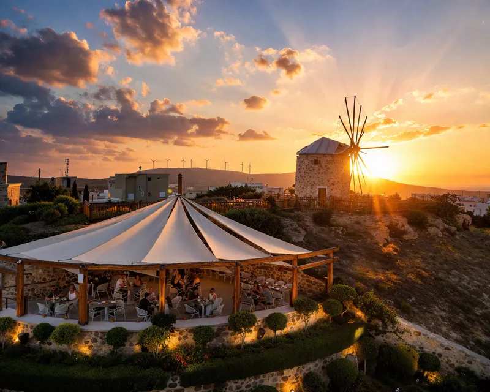

1Welcome

Witamy w Wiatrakowej Przygodzie!
- Podróż w czasie: Przygotujcie się na krok w przeszłość! Do tej podróży nie będziecie potrzebować wehikułu czasu, wystarczą tylko wygodne buty.
- Odrestaurowana wioska: Dzięki pięknej renowacji przeprowadzonej przez rodzinę Voudouris, zobaczycie dokładnie, jak żyli wyspiarze ponad wiek temu, na długo przed wynalezieniem Wi-Fi. Będziecie mieli również okazję pomyszkować i odkryć tajną historię z lat 40. XX wieku!
- Życie młynarza: Dziś możecie wejść w buty prawdziwego młynarza. Uwaga, spoiler: jego codzienny trening polegał na podnoszeniu ciężkich worków z mąką przez cały dzień, tylko po to, aby wykarmić większość wioski.
Przeczytaj historięPokaż mniej
Transkrypcja audioUkryj transkrypcję
Przygotujcie się na krok w przeszłość! Do tej podróży nie będziecie potrzebować wehikułu czasu, wystarczą tylko wygodne buty.
Podróż w czasie: Przygotujcie się na krok w przeszłość! Do tej podróży nie będziecie potrzebować wehikułu czasu, wystarczą tylko wygodne buty.
Odrestaurowana wioska: Dzięki pięknej renowacji przeprowadzonej przez rodzinę Voudouris, zobaczycie dokładnie, jak żyli wyspiarze ponad wiek temu, na długo przed wynalezieniem Wi-Fi. Będziecie mieli również okazję pomyszkować i odkryć tajną historię z lat 40. XX wieku!
Życie młynarza: Dziś możecie wejść w buty prawdziwego młynarza. Uwaga, spoiler: jego codzienny trening polegał na podnoszeniu ciężkich worków z mąką przez cały dzień, tylko po to, aby wykarmić większość wioski.
Co będziecie odkrywać
Gigantyczny Wiatrak: Zwiedźcie prawdziwy, działający wiatrak od samego dołu aż na sam szczyt.
Życie w wiosce: Zajrzyjcie do tradycyjnego domu i piekarni.
Przyroda i zwierzęta: Poczujcie zapach wspaniałych ziół w naszych ogrodach, odwiedźcie klepisko i przywitajcie się z naszymi uroczymi osiołkami.
Podziemne sekrety: Przejdźcie prosto przez prawdziwy tunel wojskowy!
Jak słuchać przewodnika
To super proste: Przewodnik otwiera się od początku. Wybierzcie język i podążajcie za ponumerowanymi punktami.
Słuchajcie razem: Wybierzcie język, podgłośnijcie telefon albo podzielcie się słuchawkami i podążajcie za numerami po wiosce.
Następny cel
Kolejny punkt: Przejdźcie dalej do naszych ogrodów z ziołami!